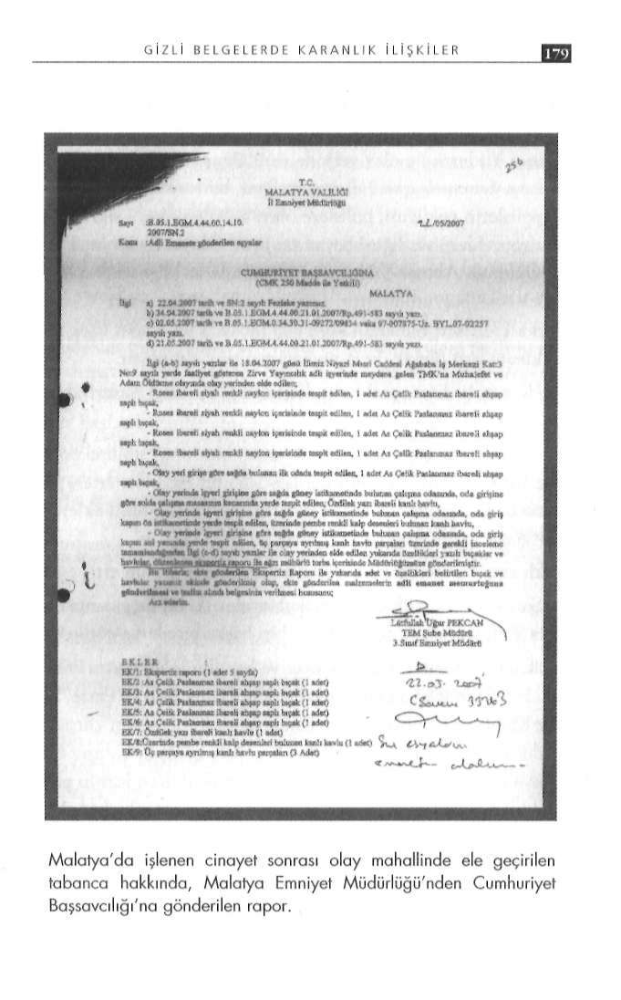

G İ Z L İ B E L G E L E R D E K A R A N L I K İ L İ Ş K İ L E R
- Salih elindeki bıçakla birlikte Emre'nin yanına giderek tik. Dönüşte Battalgazi kavşağında polis bizi durdurdu, tabanca
Uğur'u yere yatırdı. Hamit bıçakla bu şahsın başında beklemeye yı aldılar ve Emre'ye 58 YTL ceza kestiler.
başladı. Salih ile Emre bu sefer Almanı yere yatırdı. Onun başında
- Olay günü Emre bana "Necati'yi boğarak öldür" dedi. Yerda Salih beklemeye başladı. Necati'yi de Abuzer yere yatırmıştı.
den aldığım iple boğmaya çalıştım ama boğamadım bıraktım.
- Emre, Abuzer'in elindeki ipi alarak tek tek hepsinin elleri
Emre bu sırada bıçakla Necati'nin boyun kısmına bıçağı saplani bağladı. Emre lavaboya giderek havlu getirdi, üçe böldükten maya başladı, sonra sesi kesildi.
sonra yerde yatan şahısların ağızlarını bağladı.
- Daha sonra Emre bıçakla yerde yatan Alman şahsın üzerine
- Emre, Salih'e 'Necati'yi öldür' dedi. Salih iple boğmaya ça-
çıktı ve beni yanına çağırdı. Bıçağı boyun ve sırt kısmına sapladı.
lıştı, boğamadı bıraktı. Emre elinde bulunan bıçakla kafa tarafı
- Emre, Uğur'un yüzünü havluyla kapattıktan sonra hep birna saplamaya başladı. Kısa süre sonra Necati'nin sesi kesildi.
likte üzerine çullandık, Emre bıçakla şahsın sırtına, boynuna
- Daha sonra Emre, yerde yüz üstü yatan Alman şahsın üzerastgele saplamaya başladı.
rine çıktı ve Salih'i yanına çağırdı, Salih Alman şahsı tuttu, Emre boyun kısmına bıçakla saplamaya başladı.
"Kelime-i şahadet getir seni Müslüman yapacağım"
- Emre, lavaboya giderek bir havlu daha getirdi, Uğur'un yü
Sanık Abuzer Yıldırım da diğer sanıklardan farklı davranma-zünü kapattı. Emre, Salih ve Abuzer şahsın sırtına saplamaya çadı. Eylem planının ayrıntıları konusundaki açıklamaları, sanık lıştılar.
arkadaşlarının ifadeleriyle örtüştü ancak eylem anına ilişkin o da kimseyi öldürmediğini söyledi.
"Necati'yi boğarak öldür"
Abuzer Yıldırım'ın ifadesinde ilginç ayrıntılar vardı: Sanık Salih Güler de diğer sanıklar gibi kendini suçsuz gös
- Emre'yle 2005'te tanıştık. Olaydan yaklaşık iki ay önce kotermeye çalışırken, eylemin planlayıcısı olarak Emre Günaydın'ı nuştuğumuzda Emre, misyonerlerin ülkemizdeki faaliyetlerinin gösterdi.
çok tehlikeli olduğunu, Malatya'da 50 tane ev şeklinde kilisele
Salih Güler'in ifadesi:
rinin olduğunu söyledi.
- Zirve Yayıncılık'ın ismini olaydan bir ay önce öğrendim.
- Bir ay önce tekrar görüştüğümüzde bu bilgileri, babasının Burada misyonerlik faaliyetlerinin yürütüldüğünü Emre söylüspor salonuna gidip gelen ve ülkedeki Alevilik, Misyonerlik ve yordu.
Hıristiyanlık gibi bilgileri toplayarak devlete rapor yazan bir şa
- 17 Nisan 2007 günü Emre ile saat 11.00 sıralarında Eftelya hıstan aldığından söz etti ve adını da "Ruhi" olarak söyledi.
kafede buluştuk. Bana 'Abuzer'i ara buraya gelsin' dedi. Abuzer'i
- Ben de kendisine şaka ile karışık "Bu senin Ruhi, Hayat diaradım o da geldi. Üçümüz birlikte iki günlüğüne araba kiralazisindeki Deli Ruhi gibi mi?" dedim. O da "Hayır soyadı gibi o dık. Günlüğü 80 YTL olarak anlaştık ve parayı peşin verdik.
Ruhi Polat" dedi.
Arabayı kendi adıma kiraladım, Abuzer de kefil oldu.
- Olaydan önce Emre silahlı denememizi teklif etti, ıssız ola
- Arabayla Malatya Spor Tesisleri'nin ilerisinde Emre'nin gecağını düşünerek YİMPAŞ'ın arkasında atış poligonuna gittik.
tirmiş olduğu silahlarla üçümüz beşer, altışar kez havaya atış et-Herhalde üçümüz (Emre, Salih, Abuzer) 30 mermi yakmışızdır.
